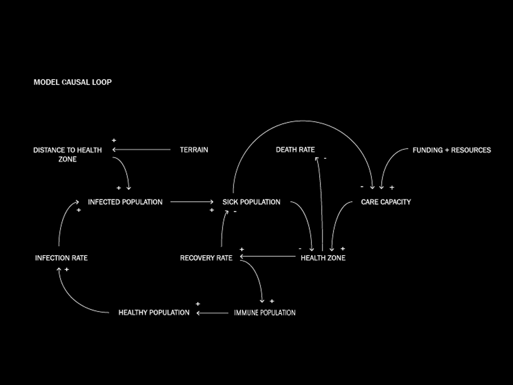
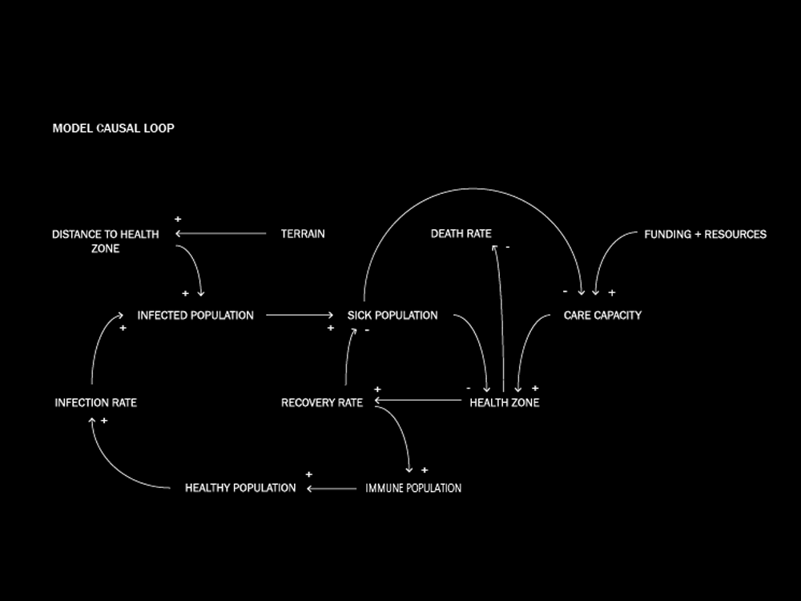

Project Description
The Outbreak Response Simulator is an agent-based infectious disease simulation model that gives the user the ability to test a range of scenarios and planning policies when responding to an infectious disease outbreak. The project has spun largely out of GSD 6349 Mapping II : Geosimulation at Havard University Graduate School of Design, taught by Professor Robert Gerard Pietrusko. [rpietrusko@gsd.harvard.edu] The project development is being continued as a thesis project in theMasters in Design Studes Risk and Resilience concentration.The Outbreak Response Simulator is an agent-based infectious disease simulation model that gives the user the ability to test a range of scenarios and planning policies when responding to an infectious disease outbreak. The project has spun largely out of GSD 6349 Mapping II : Geosimulation at Havard University Graduate School of Design, taught by Professor Robert Gerard Pietrusko. [rpietrusko@gsd.harvard.edu] The project development is being continued as a thesis project in theMasters in Design Studes Risk and Resilience concentration.Havard University Graduate School of Design, taught by Professor Robert Gerard Pietrusko. [rpietrusko@gsd.harvard.edu] The project development is being continued as a thesis project in theMasters in Design Studes Risk and Resilience concentration. The project development is being continued as a thesis project in theMasters in Design Studes Risk and Resilience concentration.Havard University Graduate School of Design, taught by Professor Robert Gerard Pietrusko. [rpietrusko@gsd.harvard.edu] The project development is being continued as a thesis project in theMasters in Design Studes Risk and Resilience concentration.
 


Michael de St. Aubin
Born and raised in the southeast United States. Recieved Bachelors of Architecture degree from Auburn University in 2012. Worked professionally at an architeture firm for four years in Boston. Has always had a focus and passion for design and humanitarianism. Now at Harvard University's design school, developing a greater interest in technology and coding's intersection with design and public health. Resume Portfolio Harvard University Graduate School of Design Masers in Design Studies Risk + Resilience Fall 2016 - Spring 2018 Email : mdestaubin@gsd.harvard.edu Cell : 404.933.3271